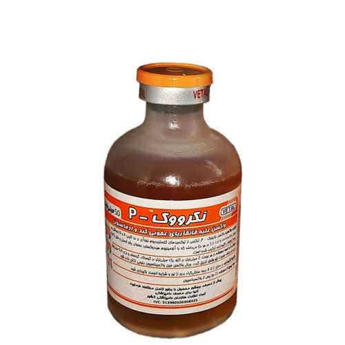

واکسن قانقاریای عفونی کبد و ادماسیون، وتال
📝ترکیب واکسن:
واکسن نکرووک P ، با دارا بودن توکسوئید Cl. novyi در دو تایپ A و B (حداقل تیتر 3.5 I.U α-antitoxin در هر دز) باهدف ایمن سازی فعال نشخوار کنندگان کوچک و بزرگ در مقابله با عامل بیماریهای هپاتیت نکروزان (بیماری سیاه) و ادماسیون فرموله شده است.
📝حیوان هدف:
گاو و گاومیش، گوسفند و بز
📝روش تزریق:
زیرجلدی
📝میزان دز
گاو و گاومیش با سن بالای 3 ماه: 2میلی لیتر
گوسفند و بز با وزن بالاتر از ۴۵ کیلوگرم: ۱ میلی لیتر
گوساله:۱ میلی لیتر
بره و بزغاله: ۰/۵ میلی لیتر
📝برنامه واکسیناسیون با نکرووک P:
◽️واکسیناسیون اولیه:
برنامه اولین تزریق که به عنوان واکسیناسیون در روز صفر در نظر گرفته می شود، در گروههای مختلف دامی به شرح زیر است:
گاو و گاومیش غیر آبستن، گوسفند و بز غیر آبستن با وزن بالاتر از ۴۵ کیلوگرم:
در هر زمان با در نظر گرفتن سلامت دام
گاو و گاومیش آبستن، گوسفند و بز آبستن:
در طول دوره آبستنی (ترجیحا نیمه دوم دوره آبستنی جهت انتقال ایمنیت از طریق آغوز به نوزاد)
گوساله، بره و بزغاله:
از هفته دوم پس از تولد برای نوزادان متولد از مادران غیر واکسینه و در هفته هشتم پس از تولد برای نوزادان متولد از مادران واکسینه
◽️واکسیناسیون یاد آور:
در صورتیکه واکسن نکرووک P برای نخستین بار مورد استفاده قرار می گیرد (نظیر نوزادان و یا دامهایی که به تازگی به گله معرفی شده اند، می بایست ۱۴-۲۱ روز پس از تزریق اول (روز صفر) واکسیناسیون یادآور را با دز و روش مشابه انجام داد.
◽️تکرار واکسیناسیون:
باهدف تداوم بخشیدن به ایمنیت محافظت کننده، ۶ ماه پس از تزریق دوم (یادآورا/راپل)، اقدام به تکرار واکسیناسیون دامها نموده و این امر هر ۶ ماه یکبار تکرار خواهد شد.
📝احتیاطات مصرف:
◽️تزریق واکسن در دامهای زیر ۲ هفته ممنوع است. و در صورت بروز ازدیاد حساسیت و یاشوک آنافیلاکسی باید بلافاصله درمان مطلوب صورت پذیرد.
◽️واکسیناسیون تنها می بایست در دامهای سالم انجام شود زیرا دامهای بیمار و یا دچار نقص ایمنی (نظیر مبتلایان به اسهال ویروسی گاوان (BVD) و لكوز گاوان (BLV)) به سطح مطلوب ایمنی محافظت کننده نخواهند رسید.
◽️واکسیناسیون در یک سوم پایانی دوره آبستنی به دلیل احتمال بروز سقط خصوصا در بزها می بایست با احتیاط کامل و رعایت اصول واکسیناسیون دامهای آبستن همراه باشد.
📝عوارض جانبی:
عوارض موقتی و زود گذر نظیر تب ملایم، درد و تورم در محل تزریق ممکن است در دام ها مشاهده شود. دوره پرهیز از مصرف تا ۲۱ روز پس از واکسیناسیون از مصرف گوشت دام خودداری گردد. مصرف شیر پس از واکسیناسیون بلامانع است.
📝بسته بندی و عمر قفسه ای:
واکسن نکرووک P در فلاکنهای ۵۰، ۱۰۰، ۲۵۰ و ۳۰۰ میلی لیتری عرضه شده و تحت شرایط مطلوب نگهداری تا ۲ سال از تاریخ تولید اعتبار مصرف دارد.